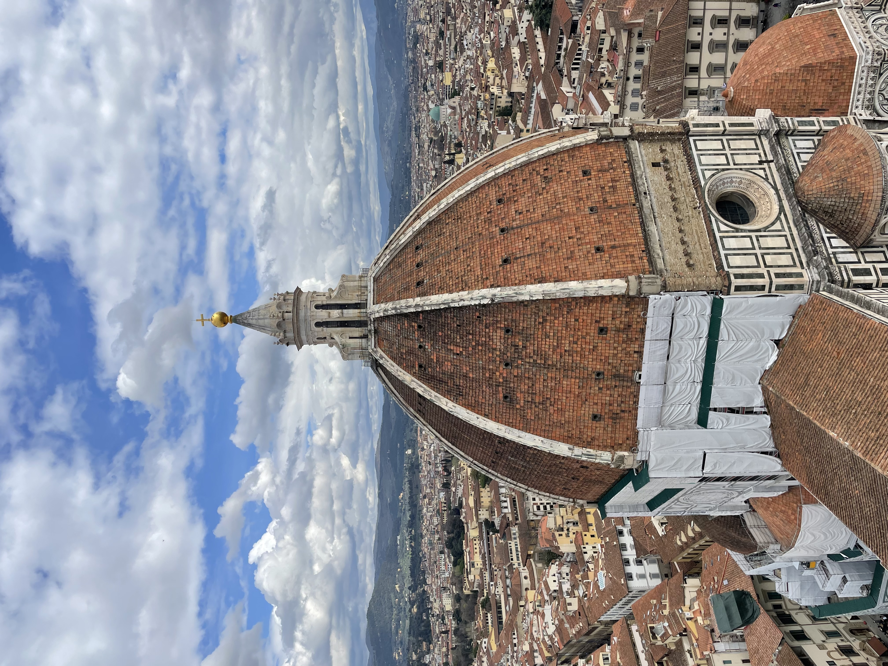
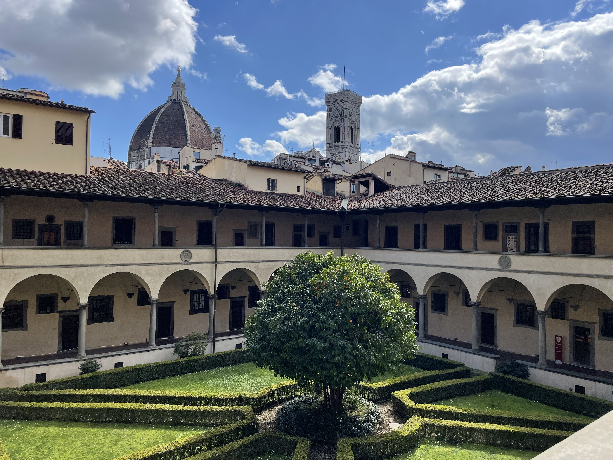
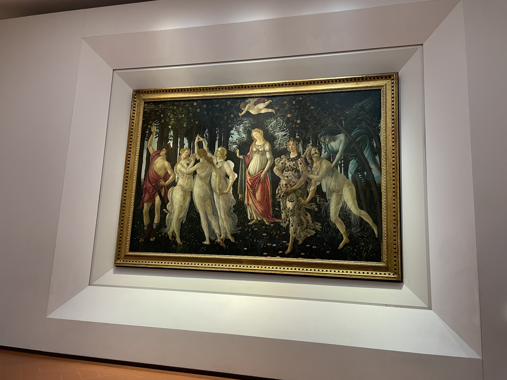
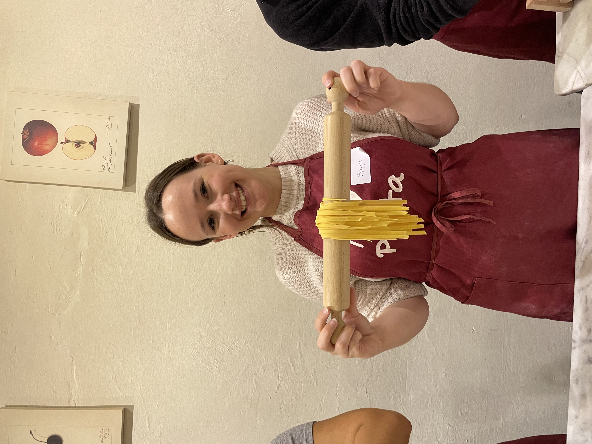

The Birthplace of the Renaissance
Florence is located in the Tuscany region of Italy. It is home to many important discoveries, inventions, and innovations of Renaissance art and architecture. Florence was declared a World Heritage Site by UNESCO in 1982. There are a number of famous and important museums and sites in Florence. It is well renowned for its history, culture, Renaissance art, architecture, and monuments. The city museums and art galleries include the Uffizi Gallery and the Palazzo Pitti.
For my abroad experience, I spent two weeks exploring the city of Florence, interviewing locals and learning more about the American Student experience and the impacts of rain on the Arno River. Here, you can find the journalistic article and photo essay I created while there.



